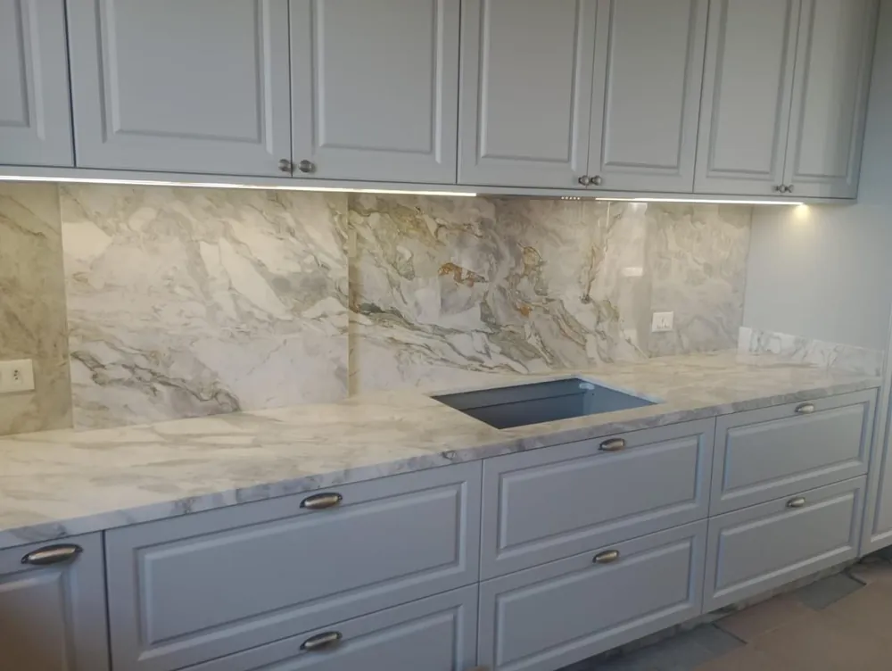

DestaqueQuartzito
Rocha natural com o desenho marcante do mármore e o comportamento técnico próximo ao do granito. É a escolha mais pedida em projetos de alto padrão.
Comportamento: alta dureza, boa resistência a riscos e baixa absorção quando impermeabilizado. Indicado para bancadas de cozinha, ilhas, frontões e painéis de destaque.
Falar sobre quartzito →